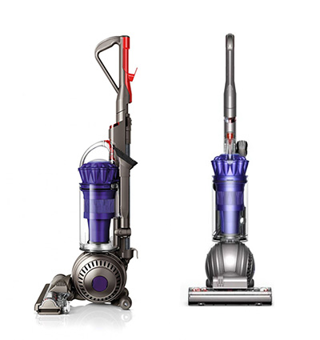

Week #1
Question 1.4 - Design for You
October 25, 2013Question 1.3 - Visual Expression
October 24, 2013Question 1.2 - Find the Gap
October 23, 2013My 10 Gaps
- When I take a nap on the train, I need some kind of support so that I can be comfortable. The neck support thing doesn't work well enough for me.
- Need a better way to organize my shoes in the closet without destroying them.
- Need to find a way to keep my plant on the table in an open space office. With only a 5 feet long table, after I put a computer and 2 monitors on the table, there is not much room left for a plant. *
- Need to find a way to store the wine information so that I can refer to it whenever I need.
- I just moved to an open office space. There is too much distraction around me. Need to find a way to stay concentrated.
- I'm short. Sometimes, when I go to places, the chair is too high for me. My feet can't reach the floor. It's not very comfortable to sit like that.
- When I gas up, sometimes I leak gas on my car. Need to find a way to prevent this.
- I work on the computer whole day and I always forget to get up and stretch. Need to find a way to force this.
- Sometimes when I get on the train, I can't find a seat. Is there something that is very light and small, possibly fit in my pocket, that I can bring to sit on?
- Sometimes, there is a lot of dirt in the vegetable that I bought and it's very hard to get rid of the dirt completely. Is there anything I can use to help clean the vegetable better?
Question 1.1 - Good Design
October 23, 2013 Why do I like this vacuum cleaner?
This product makes my house cleaning job much easier.
Before the Ball technology, the vacuum cleaner can only go straight forward and backward.
With Dyson's Ball technology, you can move the vacuum cleaner whichever way you want. By adding a ball as the steering wheel of the vacuum cleaner, you can drive your vacuum cleaner wherever there is dirt left. No need to pull your vacuum cleaner back and then push it to the dirty spot. I only need to use 50% of the energy that I used to use on vacuum cleaning.
Also, this vacuum cleaner is bagless. I don't need to worry about getting myself dirty dumping the dirt bag every time after I did the vaccum cleaning.
comments powered by Disqus